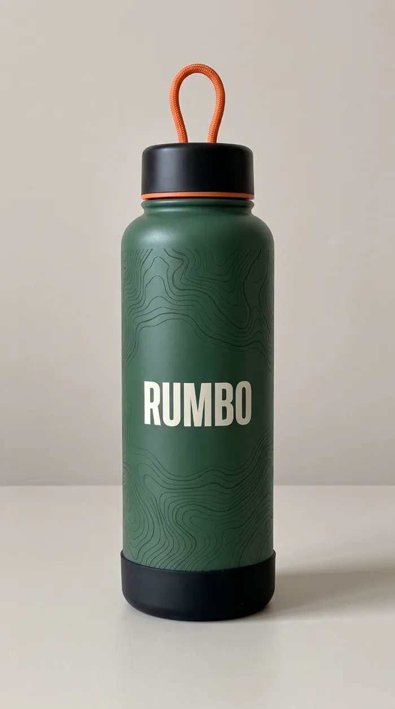

Agua fría hasta la cima. Sin cargar de más.
RUMBO es el termo de 1,5 litros hecho para los que se mueven: mantiene el agua fría 24 horas y caliente 12 horas, y es tan ligero que te olvidas de que lo llevas.
Comprar ahora$39
Hecho para moverte
Diseñado para el hiking, el trote y el gimnasio. Lo importante va adentro; lo que no hace falta, se queda en casa.
24 h frío
Sales al amanecer y el agua sigue fría cuando llegas arriba.
12 h caliente
Café o té caliente para la madrugada en la montaña.
Ligero
Pensado para correr y caminar sin sentir peso de más en la mochila.
Tapa hermética
Va de lado en la mochila sin gotear.
Ficha técnica
Nuestra historia
RUMBO nació en la montaña, al amanecer, con una botella pesada en la mochila y el agua tibia a mitad del camino.
Queríamos un termo que se pudiera llevar a todas partes: al sendero, al trote de la mañana y al gimnasio. Que aguantara el día entero y que no pesara. Como no lo encontramos, lo hicimos.
Las líneas del termo son un mapa topográfico: un recordatorio de que siempre hay un camino un poco más arriba.
Preguntas frecuentes
¿Cuánto tiempo mantiene el agua fría?
Hasta 24 horas fría y hasta 12 horas caliente.
¿Cuánta agua le cabe?
1,5 litros: suficiente para una caminata larga.
¿En qué colores viene?
Por ahora, solo en verde bosque.
¿Cuánto dura?
Está hecho para acompañarte durante años de caminatas y entrenamientos.
¿Hacen envíos?
Vendemos en toda Latinoamérica a través de nuestra tienda en línea.